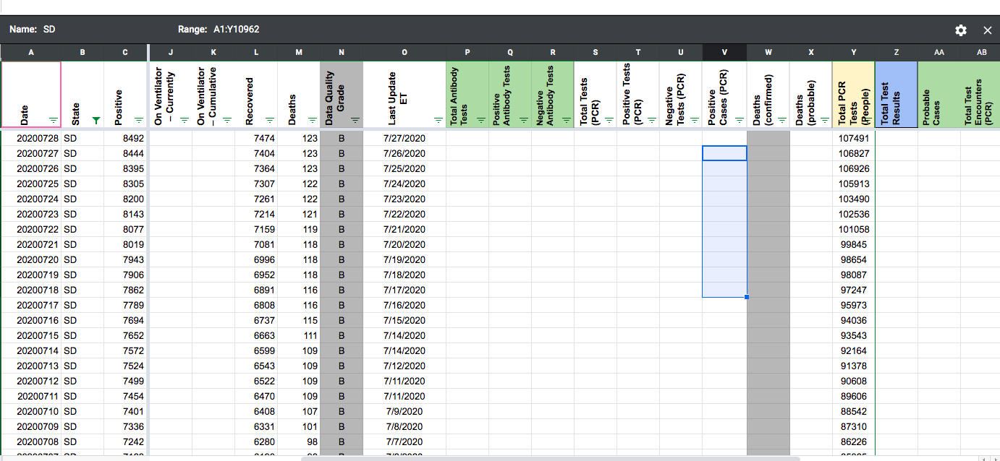
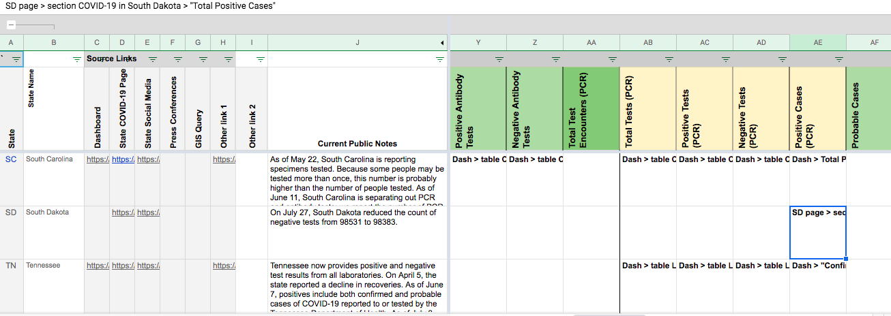
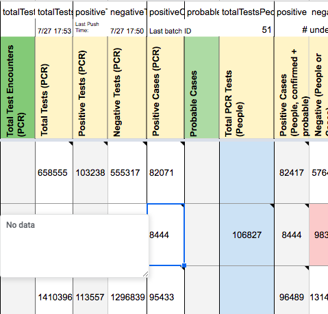
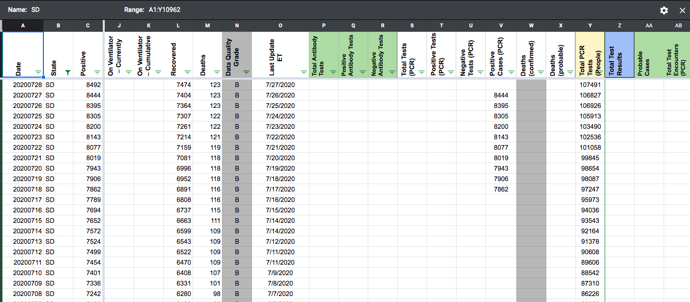

[SD] PCL Historicals
Issue number 687
jesseandersonumd opened this issue on July 29, 2020 at 8:35 am
Labels Historical Data
State: SD
Issue description: We can’t confirm that antibody testing isn’t lumped in with RT-PCR testing results. SD has no annotation that explicitly states that cases are only confirmed, but we started reporting values in positive cases (PCR) on 7/17. These values should be removed from positive cases (PCR).
Comments
jesseandersonumd commented on July 29, 2020 at 8:41 am
AFTER (positive cases (PCR) column) 
jesseandersonumd commented on July 29, 2020 at 8:43 am
POPUP BEFORE (positive cases (PCR) column) 
jesseandersonumd commented on July 29, 2020 at 8:43 am
POPUP AFTER (positive cases (PCR) column) 
the-daniel-lin commented on July 31, 2020 at 9:35 am
(DZL) Doublechecked – 7/31 7:34
BEFORE (positive cases (PCR) column) 